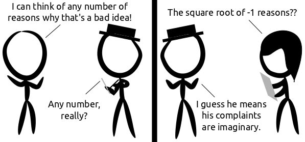

Comic JK 731
When I Feel Like It
⇤
<
?
>
⇥

⇤
<
?
>
⇥
Forum
.
RSS
.
Digg
.
Facebook
.
Reddit
.
Twitter
.
Stumbleupon
Enter your thoughts on number 731 here. Please, no spamming, trolling, phreaking, or using Inkscape on Linux. frist. not funny at all. > I liked it. (But I did not "Like" it.) >> I would +1 it but there isn't a Google+ link on this page. >> +i >>>>I thought this was very funny. Actually, I found this so bad that I actually almost-laughed. I did one of those smile-face-palm things. >+1 Does this comic have an archives page? >Well it would be very useful. Just to say: Comic JK is poorly indexed by Google to help, many webcomics use to put a description of the image in the alt text so it's easier to find when you search for it. Waiting for the archive it sounds pretty good i think. >>I agree, I have tried to search for specific comics in Google and failed. It's pretty easy with xkcd (e.g. Google xkcd ass-car). >> I might write one now. I'll do it up with a wiki to croudsource the comic text. ~ LukeShu (author of the ComicJK Discussion archive: lukeshu.ath.cx/1/comicjk/viewer.php) HAHA > no >> yes, HAHA! >>> almost, HAHAHA! I think it's pretty clear from the context that he is referring to countable numbers. I just can't decide if guy is being a pedantic bag of douche or if he is actually an idiot. > If he understands the square root of -1, he probably couldn't be that stupid. I think the guy on the left was just trying to get the hat guy off his back, who just reported it back to his boss. Why am I the only one who seems to "get" the comic?? The guy in the hat is a reporter... interviewing some idiot politician. Any number... reporter takes him at his word and his reason is imaginary... I wish some reporter WAS that smart! >Fair enough. I guess the gray and black chopsticks he is holding can pass for a pad and paper, given the medium. Your interpretation makes the joke the funniest, but it also makes it the worst-laid-out. >agreed - the joke clearly references the fact that a lot of people say things without considering the actual meaning of the words they are snergelborfling... >>or does it reference the fact that a lot of people take things they hear out of context and introduce new and unrelated meanings in order to boost ratings? The alt-text completely made up for the joke :D